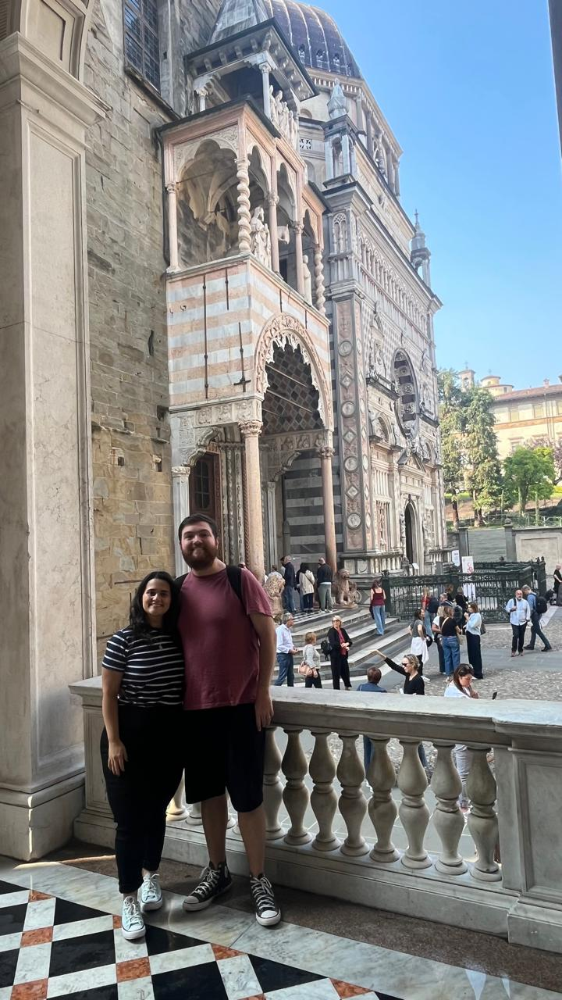
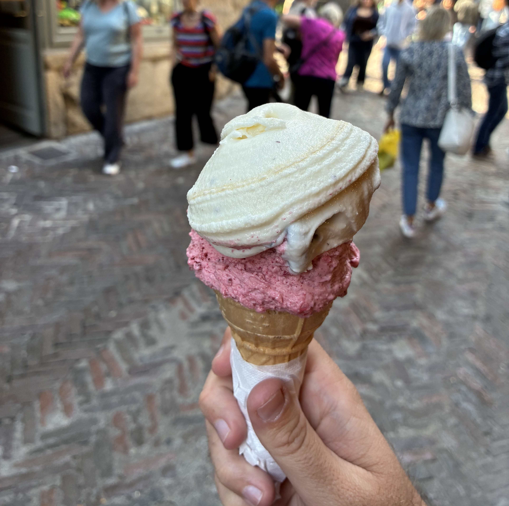
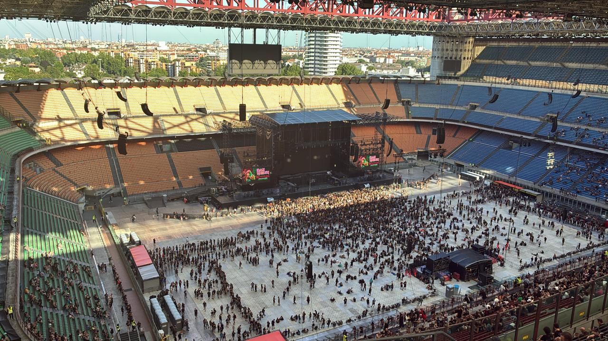

Bergamo




Milão → Bergamo
Saindo de Gorla, pegue a linha vermelha (M1) até Loreto. Lá, faça a baldeação para a linha verde (M2) e siga até a estação Centrale. Na Estação Central de Milão, compre seu bilhete de trem para Bergamo.
A viagem dura cerca de uma hora e custa em torno de 10 a 15 euros ida e volta.
Ao chegar em Bergamo, para subir até a Cidade Alta, utilize o funicular, uma experiência charmosa e prática, com bilhetes em torno de 1,50 euro por trecho.
Pontos Turísticos Imperdíveis
- Piazza Vecchia: O coração da Cidade Alta, rodeada por palácios renascentistas e marcada por uma atmosfera vibrante.
- Basílica di Santa Maria Maggiore: Construída no século XII, impressiona com seus interiores ricamente decorados e detalhes barrocos.
- Muralhas Venezianas: Patrimônio da UNESCO, oferecem vistas panorâmicas e contam a história da influência veneziana.
- Campanone: Torre cívica com vista espetacular da Piazza Vecchia e das colinas ao redor.
Gastronomia em Bergamo
- Primo piatto: Polenta taragna, cremosa e cheia de sabor.
- Secondo piatto: Além do casoncelli, experimente o coniglio alla bergamasca (coelho ao vinho branco e ervas) ou o ossobuco com polenta.
- Sobremesa 🍦: Polenta e osei (um macio pão de ló recheado com creme e coberto por uma camada de marzipã amarelo enfeitado com pássaros de açúcar), mas o destaque absoluto é o sorvete de Stracciatella, criado em Bergamo. A sorveteria Mariana é o lugar certo para provar essa delícia.
Dica dos Ussinhos 🐻💡
Vale a pena incluir Bergamo no roteiro apenas se você tiver bastante dias disponíveis ou quiser preencher um dia livre depois de já ter explorado Milão e arredores. É uma cidade que recompensa quem tem tempo para apreciar seus detalhes, mas pode ser deixada como um “extra” para quem busca algo além do básico.